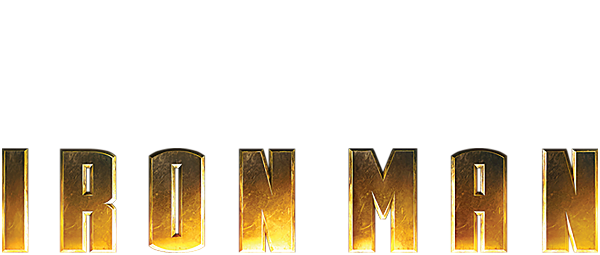
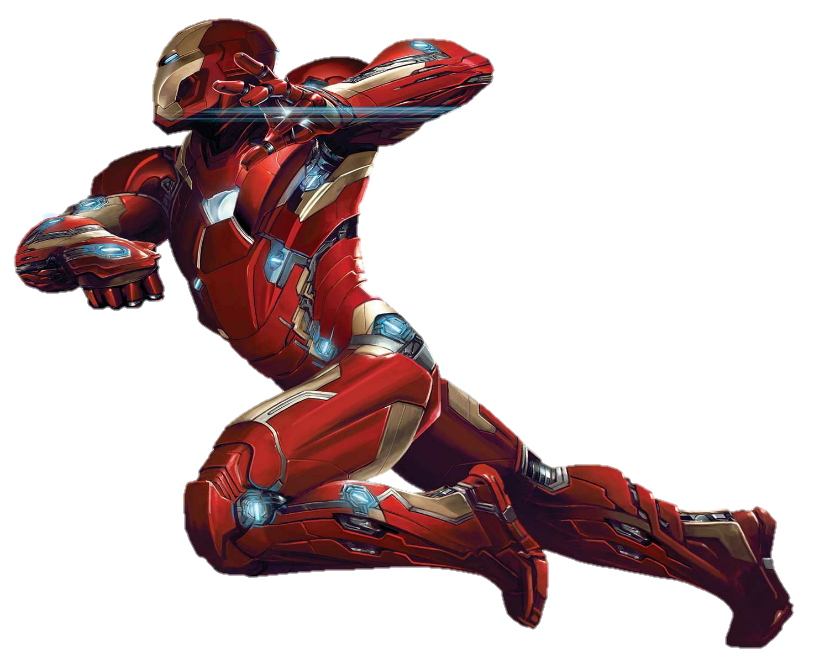

Sinopse:
Tony Stark é um industrial bilionário e inventor brilhante que realiza testes bélicos no exterior, mas é sequestrado por terroristas que o forçam a construir uma arma devastadora. Em vez disso, ele constrói uma armadura blindada e enfrenta seus sequestradores. Quando volta aos Estados Unidos, Stark aprimora a armadura e a utiliza para combater o crime.
Tony Stark é um industrial bilionário e inventor brilhante que realiza testes bélicos no exterior, mas é sequestrado por terroristas que o forçam a construir uma arma devastadora. Em vez disso, ele constrói uma armadura blindada e enfrenta seus sequestradores. Quando volta aos Estados Unidos, Stark aprimora a armadura e a utiliza para combater o crime.
23 de Janeiro
NOS CINEMAS
NOS CINEMAS